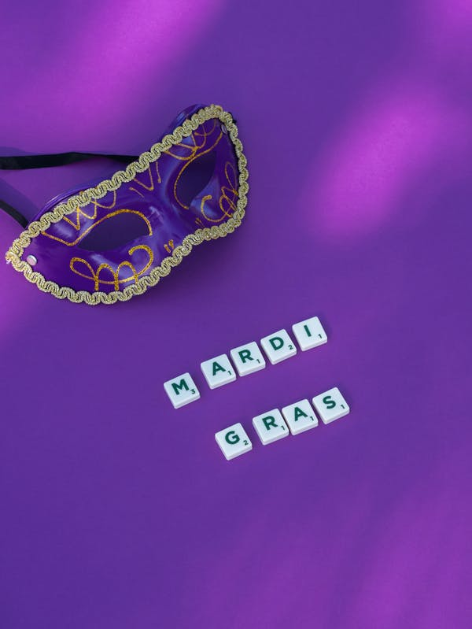
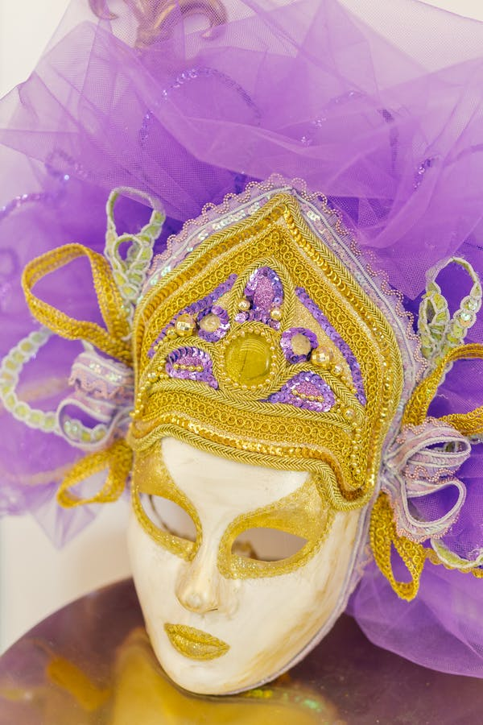
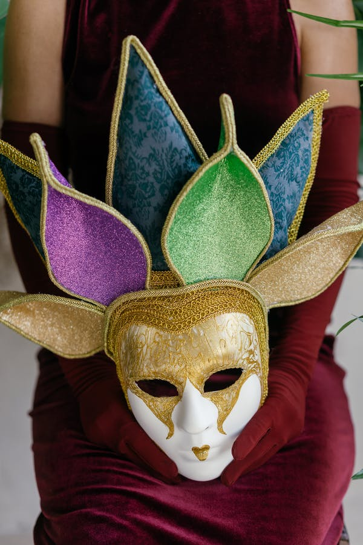
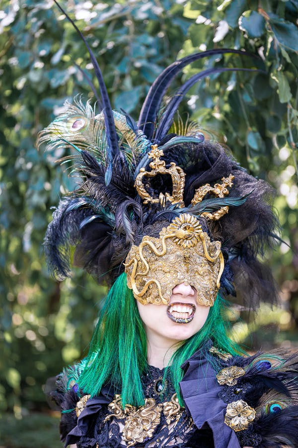

העדלאידע
תהלוכת פורים הגדולה במדינה מתקיימת מידי שנה בעיר חולון והיא מהווה שיאה של פעילות קהילתית וארגונית המתרחשת במהלך השנה ומתעצמת לקראת החג. בתהלוכה, אשר מתמקדת בכל פעם בנושא מרכזי שונה, נוטלים חלק אלפי צועדים, ביניהם: תלמידי בתי הספר בחולון, משתתפי החוגים במרכזים הקהילתיים ובמרכזי התרבות והספורט, להקות של מתעמלים, פעלולנים ואקרובטים, קבוצות מנגנים ורקדנים, קבוצות תיאטרון רחוב, וכמובן מיצגי ענק ססגוניים, המהווים את החלק המרגש והמרשים במיוחד.
כחלק מההכנות לעדלאידע מתנהל בכל שנה תהליך חשיבה בהשתתפות כלל הגורמים בעיריית חולון ובחברות הבת העוסקות באירועים, תרבות, פנאי וספורט. בסופו של התהליך נבחר הנושא המרכזי המתאים לאותה שנה. הקבוצות השונות הנערכות לעדלאידע נרתמות לעבודה יצירתית, לחזרות ולאימונים סביב אותו נושא מרכזי.
מקור השם בתחילה נקראה התהלוכה בשם "קרנבל", שהוא שמן של התהלוכות המקבילות לה במסורת הנוצרית. בשנת 1932 הוכרז על תחרות למתן שם קבוע לתהלוכה. מתוך כ-300 הצעות שהוגשו, נבחרה הצעתו של הסופר י"ד ברקוביץ להעניק לתהלוכה השם "עַדְלֹאיָדַע" – שהכוונה בה היא הגעה לשכרות עד לטשטוש מוחלט ואי-ידיעה; זאת על פי דברי רבא (תלמוד בבלי, מסכת מגילה, דף ז', עמוד ב'): ”מיחייב איניש לִבְסוּמֵי בפוריא עַד דְלֹא יָדַע בין ארור המן לברוך מרדכי“ (ארמית: חייב אדם לשתות לשוכרה בפורים עד שלא ידע להבחין בין המן הארור למרדכי המבורך), ועם רכיב הומופוני השומר משמעות וצליל של הסופית היוונית "-יאדה".[17] בין המציעים האחרים היו חיים נחמן ביאליק, שהציע את השם "פּוּרָה", שאול טשרניחובסקי, שהציע את השם "אסתורת", ואברהם שלונסקי, אשר הציע את "צהלולה".

עיריית חולון
מזמינה אתכם ואתכן
לחגוג את פורים
בתתהלוכה הגדולה מכולן

העדלאידע
בין נושאי העדלאידע במהלך השנים היו: ילדי העולם עושים שלום, דמוי; אהובות מספרי הילדים וגני הסיפור, דמויות מסיפורי התנ"ך, לוקחים את הסביבה בסבבה בסימן הגנת הסביבה ושמירת משאבי הטבע, עדלאידע זה אופרה אחרת במלאת 60 לאופרה הישראלית ובסימן 70 שנה לאיחוד שכונות חולון למועצה אחת, עשור למוזיאון הילדים בסימן סובלנות, כבוד לזולת וקבלת האחר ועוד.